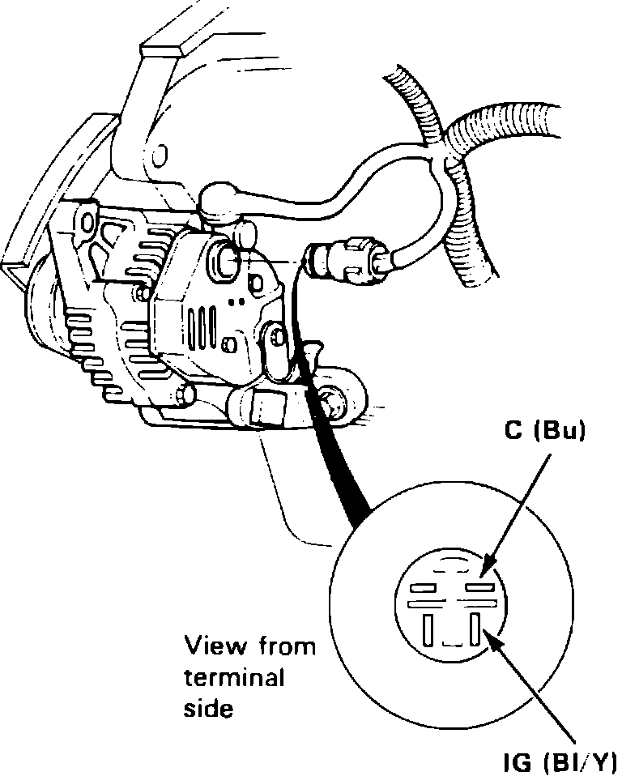
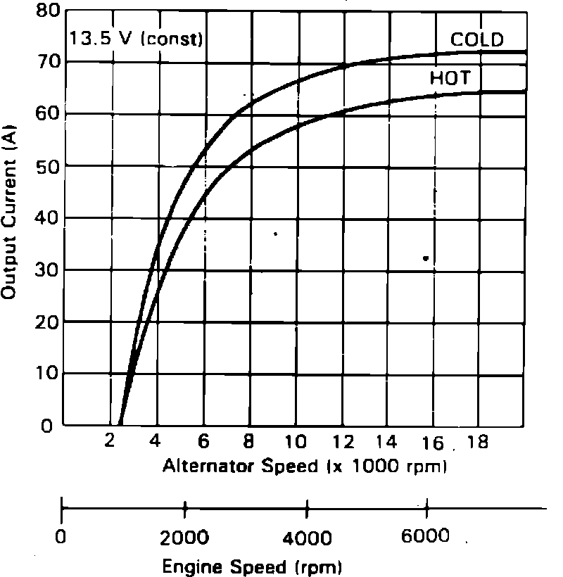
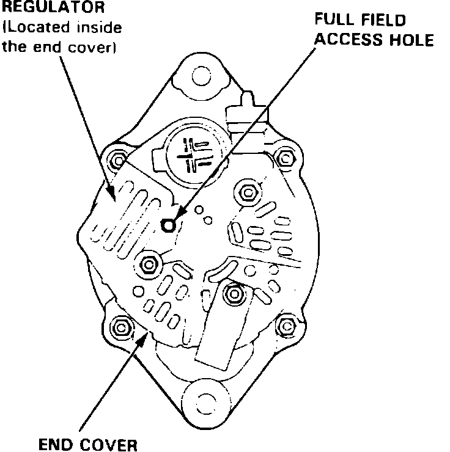

Alternator and Regulator Circuit Test
1. Ensure battery is fully charged and that alternator belt, connections at alternator and main fuses are in satisfactory condition.
2. Ensure fuse No. 4 in the dash fuse panel is in satisfactory condition.
3. Disconnect electrical connector from alternator.
Fig. 5 Alternator test connections. 1988 Integra:

4. Turn ignition switch on and ensure battery voltage exists between alternator connector black/yellow wire terminal and ground, Fig. 5. If no voltage exists, check for blown fuse No. 4 or open in black/yellow wire.
5. Connect voltmeter positive lead to battery positive terminal and negative lead to C (Blue) terminal of alternator connector.
6. With all accessories Off, start engine and check that battery voltage exists. If no voltage exists, an open exists in blue wire between voltage regulator and ECU, or a defective ECU is indicated.
7. Turn on headlights and observe voltmeter. No voltage should be evident. If battery voltage is indicated, a short to ground exists in Bu wire between voltage regulator and ECU, or a defective ECU is indicated.
Fig. 6 Connecting charging system analyzer:

8. Connect Sun VAT-40 charging system analyzer or equivalent to system as shown in Fig. 6, then position selector switch in No. 1 position.
9. With all accessories Off, start engine, move selector switch to No. 2 position, then remove inductive pickup and zero ammeter.
10. Reconnect inductive pickup, ensuring arrow on pickup points away from battery.
Fig. 7 Alternator test specifications. 1988 Integra:

11. Turn on headlights and rear window defogger and ensure cooling fans are off, accelerate and hold engine at 2000 RPM, then apply a load with carbon pile so that voltage drops to no less than 12 volts. Check maximum amperage reading and compare to specifications, Fig. 7. Subtract 5 to 10 amps from reading to allow for engine operation.
12. If reading obtained in previous step is within specified range, charging system is operating normally. If not, proceed to next step.
Fig. 8 Full field access hole location. 1988-91 Integra (1988-91 Legend similar):

13. Attach probe to full field test lead on analyzer and insert probe into access hole at back of alternator, Fig. 8. Switch analyzer to ``A'' (ground) position and check maximum amperage reading. Voltage will rise quickly when performing this operation. Do not allow voltage to exceed 18 volts, or damage to system may result.
14. If reading obtained in previous step is not within specified range, replace alternator. If reading obtained is as specified, check to ensure that black/yellow wire at connector has battery voltage and that blue wire is open (no continuity). If blue wire shows continuity, check for ground to body, defective ECU or faulty ELD signal. Repair wires as necessary.
15. If alternator and wires are satisfactory, replace voltage regulator.